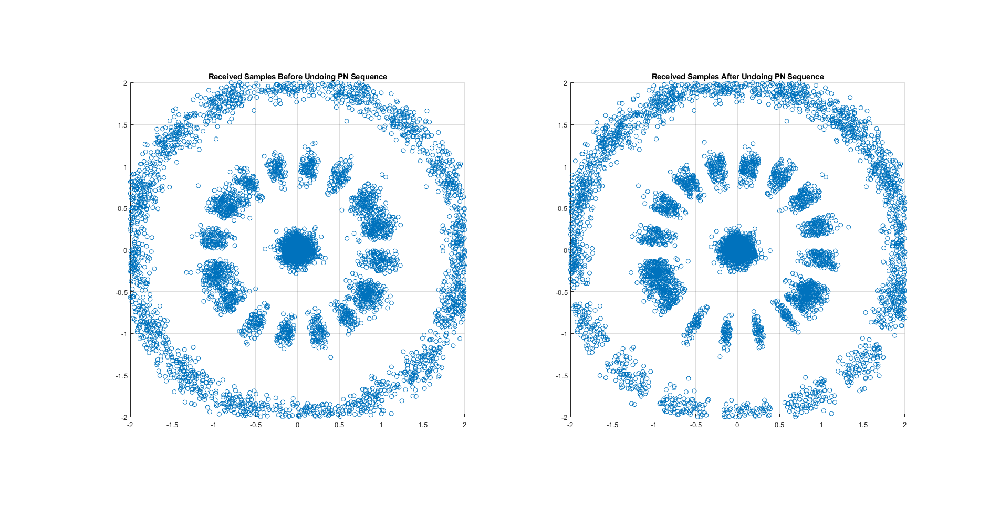
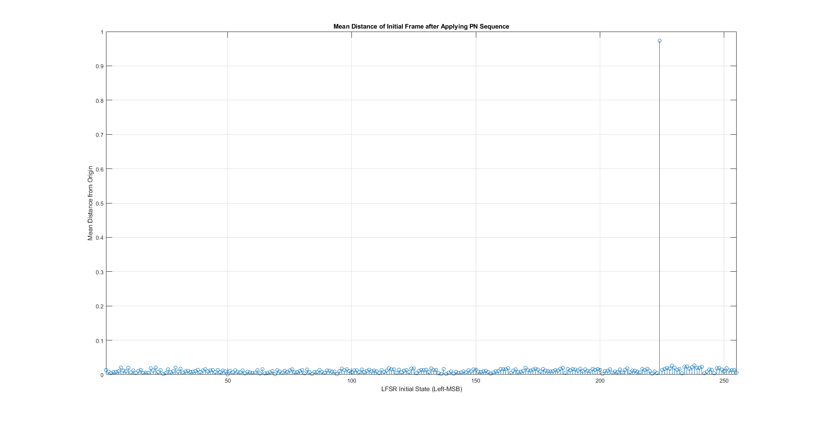
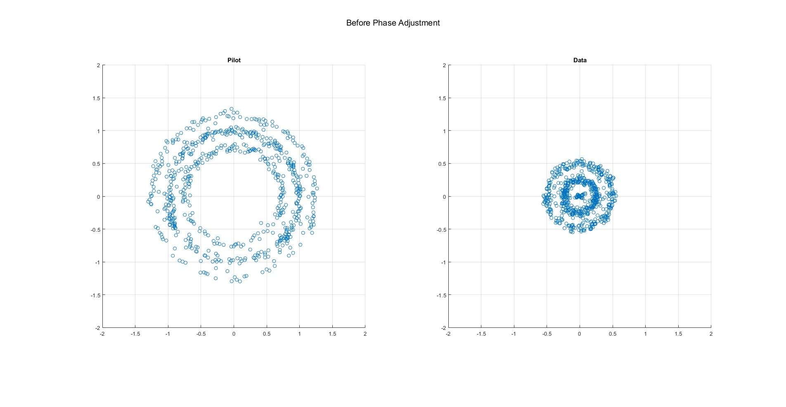
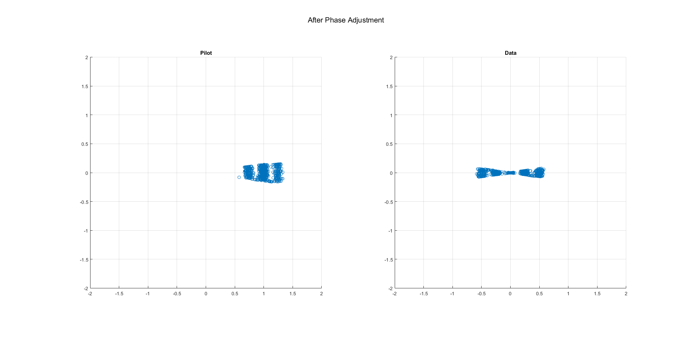
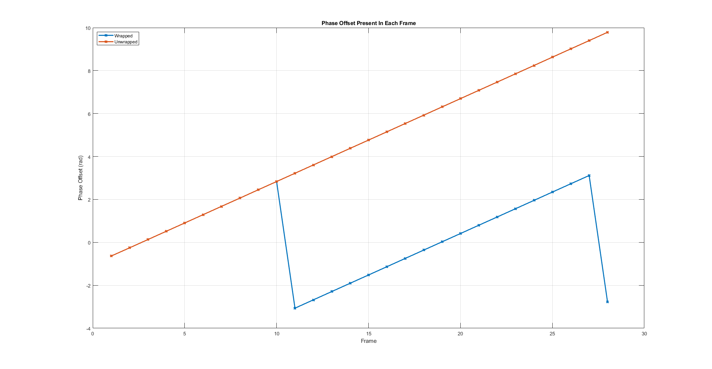

Contents
clear; clc; close all;
load('Rcvd_Wadolowski.mat')
walsh = hadamard(8);
w0 = walsh(1,:);
w5 = walsh(5,:);
lenR = length(Rcvd);
frames = lenR/(4*255);
rrcFilt = rcosdesign(.75,6,4,'sqrt');
rFiltered = conv(Rcvd,rrcFilt,'same');
rcvd4 = rFiltered(1:4:lenR);
maxVal = -inf;
maxState = zeros(1,8);
pilotDist = nan(1,255);
for ii = 1:255
state = de2bi(ii,8,'left-msb');
seq = lfsrSeq([8,7,6,1],state,255);
seq = 2*seq - 1;
temp = rcvd4(1:255).*seq;
pilotDist(ii) = abs(mean(temp));
if(pilotDist(ii) > maxVal)
maxVal = pilotDist(ii);
maxState = state;
end
end
init = maxState;
seq = lfsrSeq([8,7,6,1],init,lenR/4);
seq = 2*seq - 1;
rPN = rcvd4.*seq;
temp = reshape(rPN,255,[]);
infoSamps = temp(1:192,:).';
pilot = repmat(w0,frames,24).*infoSamps;
data = repmat(w5,frames,24).*infoSamps;
phases = angle(mean(pilot,2));
corInfoSamps = infoSamps.*repmat(exp(-1j*phases),1,192);
corInfoSamps = reshape(corInfoSamps.',8,[]);
iwPilot = w0*corInfoSamps/8;
iwData = w5*corInfoSamps/8;
decData = reshape(real(iwData),8,[])' < 0;
decData = bi2de(decData,'right-msb')';
message = char(decData(4:(end-3)))
chipRate = 1e6;
frameRate = chipRate/255;
unPhases = unwrap(phases.');
diffPh = diff(unPhases);
freqOffset = mean(diffPh)*frameRate/(2*pi);
fprintf(['\nFor a chip rate of 1e6 MHz, the frequency offset is ',...
num2str(freqOffset),' Hz\n']);
message =
'It's such a magical mysteria, When you get that feelin', better start believin'
For a chip rate of 1e6 MHz, the frequency offset is 240.9614 Hz
Now time for some plots
figure('units','normalized','outerposition',[0,0,1,1])
subplot(1,2,1)
scatter(real(rcvd4),imag(rcvd4))
xlim([-2,2]); ylim([-2,2]); grid on; daspect([1 1 1]);
title('Received Samples Before Undoing PN Sequence')
subplot(1,2,2)
scatter(real(rPN),imag(rPN))
xlim([-2,2]); ylim([-2,2]); grid on; daspect([1 1 1]);
title('Received Samples After Undoing PN Sequence')
figure('units','normalized','outerposition',[0,0,1,1])
stem(1:255,pilotDist)
xlim([1,255]); ylim([0,ceil(max(pilotDist))]); grid on;
xlabel('LFSR Initial State (Left-MSB)')
ylabel('Mean Distance from Origin')
title('Mean Distance of Initial Frame after Applying PN Sequence')
p1 = mean(reshape(pilot.',8,[]));
d1 = mean(reshape(data.',8,[]));
figure('units','normalized','outerposition',[0,0,1,1])
subplot(1,2,1)
scatter(real(p1),imag(p1))
xlim([-2,2]); ylim([-2,2]); grid on; daspect([1 1 1]);
title('Pilot')
subplot(1,2,2)
scatter(real(d1),imag(d1))
xlim([-2,2]); ylim([-2,2]); grid on; daspect([1 1 1]);
title('Data')
sgtitle('Before Phase Adjustment')
figure('units','normalized','outerposition',[0,0,1,1])
subplot(1,2,1)
scatter(real(iwPilot),imag(iwPilot))
xlim([-2,2]); ylim([-2,2]); grid on; daspect([1 1 1]);
title('Pilot')
subplot(1,2,2)
scatter(real(iwData),imag(iwData))
xlim([-2,2]); ylim([-2,2]); grid on; daspect([1 1 1]);
title('Data')
sgtitle('After Phase Adjustment')
figure('units','normalized','outerposition',[0,0,1,1])
plot(1:frames,phases,'-x','Linewidth',2)
hold on;
plot(1:frames,unPhases,'-x','Linewidth',2)
legend('Wrapped','Unwrapped','Location','NorthWest')
xlabel('Frame')
ylabel('Phase Offset (rad)')
title('Phase Offset Present In Each Frame')
grid on
    